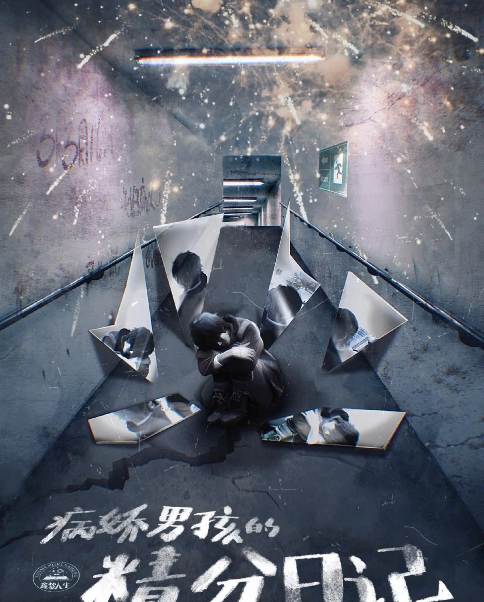
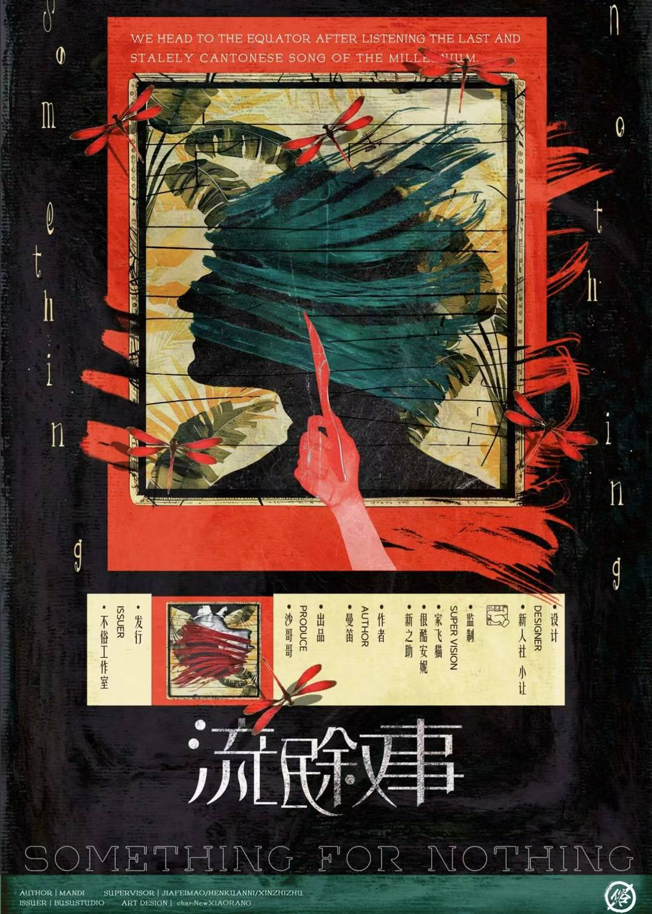
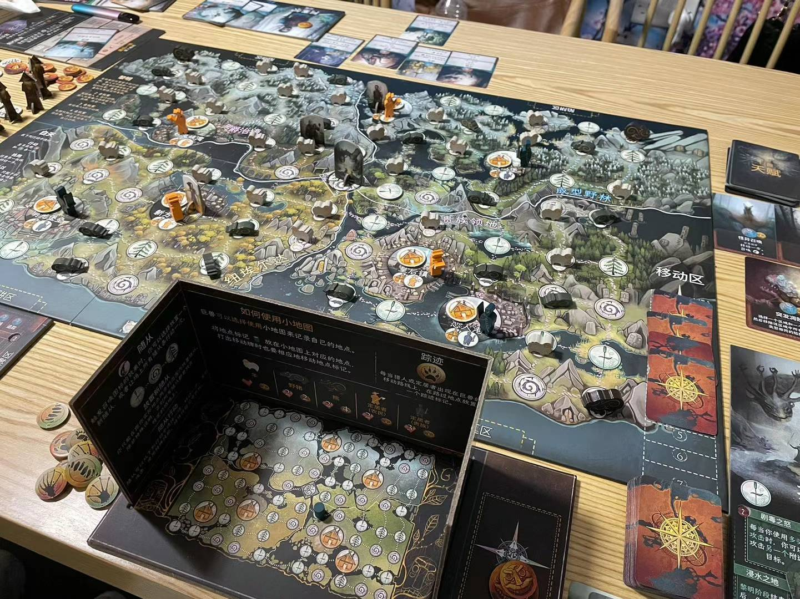
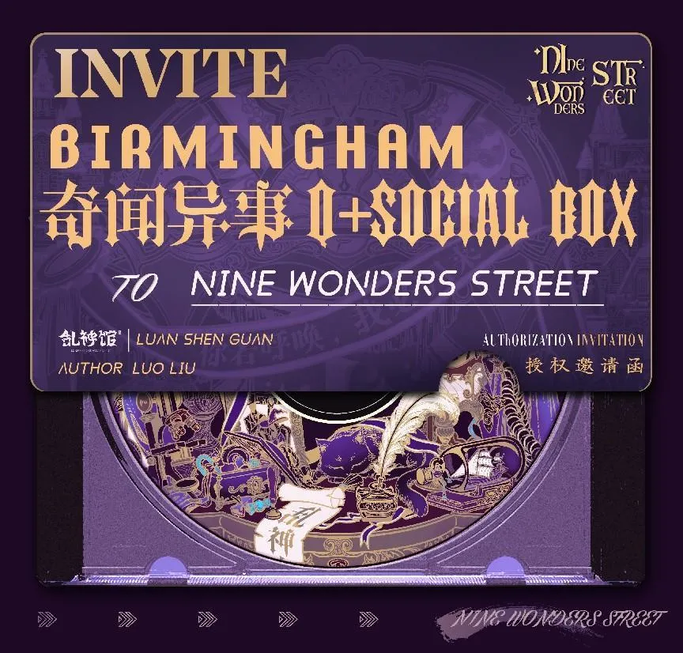

新手剧本推荐

雪乡连环杀人事件
点击查看详情

青楼
点击查看详情

病娇男孩的精分日记
点击查看详情
与朋友一起体验桌面游戏的乐趣
在「奇闻异事」，我们精心策划了丰富多样的桌面游戏收藏，适合各种偏好和技能水平。我们的桌游区为休闲聚会和严肃的游戏环节提供了一个温馨的空间。
我们的桌游收藏包含200多种精心挑选的全球桌游，既满足休闲玩家也适合桌游发烧友。从经典策略游戏到最新派对游戏，总有一款适合您。
我们有100+正版剧本库，情感、硬核推理、机制阵营、欢乐、恐怖等全类型应有尽有。不论你是新手还是老玩家，水龙头还是菠萝头，在这里都能找到最适合你的剧本！更有大演绎舞台打造无死角沉浸感！
精选近百款超好玩桌游，无论你是一个人还是一群人，想要短时间还是长时间体验，我们都能帮你找到最适合你的桌游！欢乐、策略、冒险、解谜等一应俱全，并且我们还和全球尖桌游制造商LongPack Games达成了合作协议，致力给大家市面上最新最好的桌游体验。
为了满足不同母语的玩家或者是想要来练习口语的玩家需求，以及把剧本杀走向世界我们拿到了国内顶尖剧本发行乱神馆的全球首家英文剧本授权： 《九不思议街》—《Nine Wonders Street》 翻译均由我们内部人员逐字完成，翻译量超15万字历经2个月，经过多次修改调整打磨，及英国本地人润色，保证是100% Native表达。欢迎想带自己的外国朋友来体验剧本杀的小伙伴，以及想来练习口语的朋友们！剧本背景及人物完全符合欧美，不用担心有文化差异以及冲突～
我们精选了一些热门城限本， 并设计制作了精美票根赠送给来体验的每个玩家， 供玩家收藏纪念。
经典社交推理游戏，玩家需要找出混在人群中的狼人。
一个雨夜，一群不幸的旅行者闯入了一所古宅。这其实是一个研究所，他们已经被一头神秘的生物盯上了……

在很久很久以前，一个叫做鸦木布拉夫的沉睡小镇里，雷雨交加。午夜时分，一阵骇人的惨叫声回荡在那藤蔓覆盖且又错综复杂的乡间小径上。 受到惊吓的镇民们赶往城镇广场查看，他们发现当地的一位说书人被谋杀了，他的尸体被钉在钟楼的时针上，鲜血不断地滴落在下方的鹅卵石上。众人的好奇心开始逐渐转变为恐惧，显而易见，有恶魔正在逍遥法外，它在夜晚杀戮，而在白天化为人形隐匿于镇民之中。 每位镇民都有一些信息，但恶魔和它的爪牙也会散布谎言来混淆视听，萌生猜忌以此来掩盖恶魔的身份。善良的人们会将破碎的信息及时拼凑完整吗？还是说邪恶方会在这座曾经和平的小镇上肆虐横行？
✨俄罗斯轮盘式抽卡游戏，社恐秒变社牛！把炸弹猫塞给下家的快乐谁懂啊！（适合酒桌游戏替补选手）